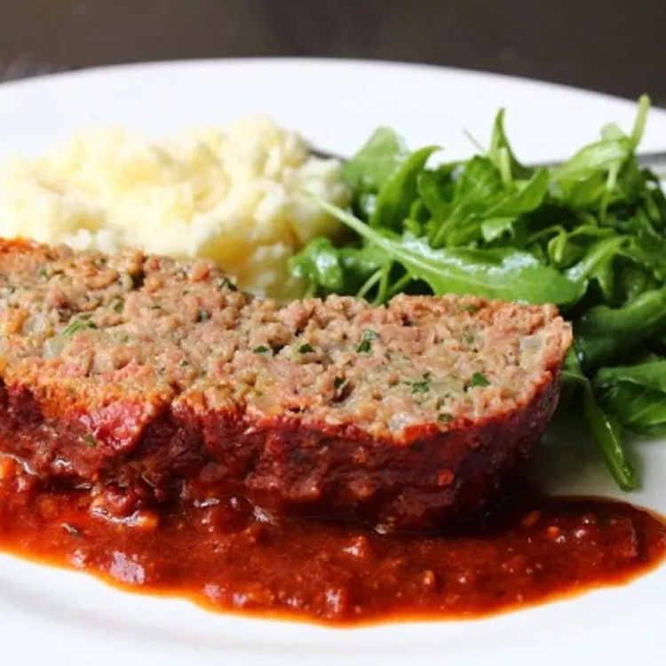

Chef John's Meatball-Inspired Meatloaf

A meatloaf recipe inspired by meatballs
Ingredients
- 1 tablespoon olive oil
- 1 tablespoon butter
- 1 onion, diced
- salt to taste
- 4 cloves garlic, minced
- 1 ½ cups very dry white bread crumbs
- 1 ½ cups milk
- 2 pounds ground chuck
- ½ cup chopped fresh flat-leaf parsley
- 2 ounces grated Parmesan cheese
- 2 large eggs, beaten
- 2 teaspoons salt
- 1 teaspoon freshly ground black pepper
- 1 pinch cayenne pepper, or to taste
- 3 cups tomato sauce, or to taste